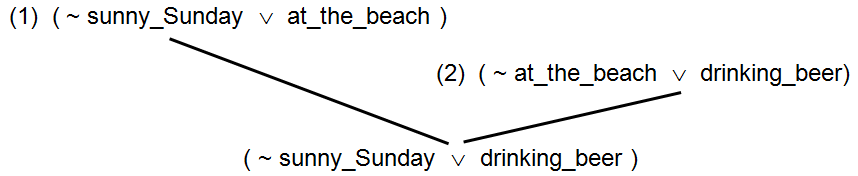
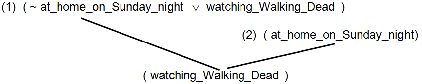
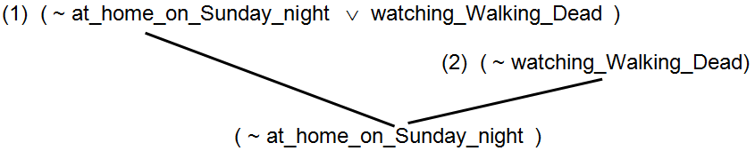
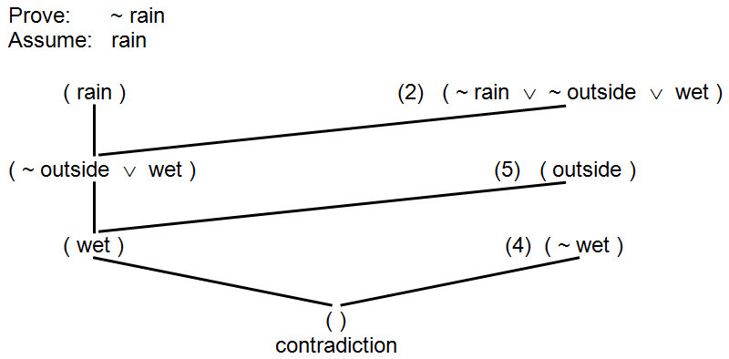
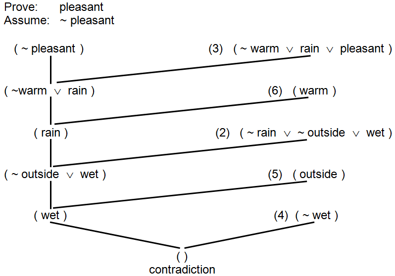

In the previous section, we establish the basic concepts underlying propositional logic. This section further refines our understanding of propositional logic by presenting a “standardized format” for representing propositional logic expressions and a simple but powerful technique for automated reasoning. The standardized format is known as conjunctive normal form. The automated reasoning technique is called resolution.
recaps the example used in the previous section that expressed facts about a particular summer day. The six statements that comprise this example are expressed in English in Part (a) of the figure and in propositional logic in Part (b). Part (c) illustrates the propositions of Part (b) rewritten in conjunctive normal form.
- (1) If you go swimming you will get wet.
- (2) If it is raining and you are outside then you will get wet.
- (3) If it is warm and there is no rain then it is a pleasant day.
- (4) You are not wet.
- (5) You are outside.
- (6) It is a warm day.
(a) Facts about a summer day – expressed in English
- (1) swimming ⇒ wet
- (2) ( rain ∧ outside ) ⇒ wet
- (3) ( warm ∧ ~ rain ) ⇒ pleasant
- (4) ~ wet
- (5) outside
- (6) warm
(b) Facts about a summer day – expressed in propositional logic
- (1) ( ~ swimming ∨ wet ) ∧
- (2) ( ~ rain ∨ ~ outside ∨ wet ) ∧
- (3) ( ~ warm ∨ rain ∨ pleasant ) ∧
- (4) ( ~ wet ) ∧
- (5) ( outside ) ∧
- (6) ( warm )
(c) Facts about a summer day – expressed in conjunctive normal form
Facts about a summer day
Conjunctive normal form is a particular way of writing logical expressions, where all of the expressions concerning a particular topic are combined together to form a single statement. Conjunctive normal form statements consist of a number of conjoined clauses (clauses joined by and), where each clause consists of either a single term or multiple disjoined terms (terms joined by or). Terms are individual propositional variables that may or may not be negated.
Any collection of propositional logic statements can be converted into conjunctive normal form using the equivalences introduced in the previous section. In order to convert the six statements of (b) into conjunctive normal form, we first note that all six of the statements are assumed to be true. Hence, we are actually saying that the following single statement is true.
(1) and (2) and (3) and (4) and (5) and (6)
Using the symbol for and this combined statement could be rewritten as:
(1) ∧ (2) ∧ (3) ∧ (4) ∧ (5) ∧ (6)
where the statement numbers would be replaced with their associated propositions.
To be in conjunctive normal form, each of the individual clauses, represented by statement numbers above, must consist of either a single term or multiple terms that are joined together by or. Referring to (b), clause (5) outside and clause (6) warm, are in the proper form. Also, since a negated propositional variable is a valid term, clause (4) ~ wet is ok.
Clauses (1), (2), and (3) require some work since they use both the implies and and operators. As we showed in the previous section using truth tables, ~ P ∨ Q is equivalent to P ⇒ Q so, we can rewrite the first three clauses as follows:
- (1) ~ swimming ∨ wet
- (2) ~ ( rain ∧ outside ) ∨ wet
- (3) ~ ( warm ∧ ~ rain ) ∨ pleasant
Clause (1) is now in the correct form since it consists of two disjoined (ored) terms. Clauses (2) and (3) are not yet in final form since these clauses contain and operations and not operations that extend over more than a single term.
The next step is to apply the substitution ~ ( P ∧ Q ) equivalent to ~P ∨ ~ Q , giving:
- (2) ~ rain ∨ ~ outside ∨ wet
- (3) ~ warm ∨ ~ ~ rain ∨ pleasant
Clause (2) is now in proper form. Getting clause (3) into proper form depends only on recognizing that double negatives cancel themselves out. In other words, ~ ~ P is equivalent to P.
(3) ~ warm ∨ rain ∨ pleasant
This completes our conversion of the statements of (b) into the conjunctive normal form shown in (c).
While the conjunctive normal form version of the statements may not be as clear to a human being as the original six statements, we can be sure that this version has exactly the same “meaning” since we were careful to only make logically equivalent substitutions at each step of the conversion process.
If conjunctive normal form expressions are difficult for people to read and comprehend, why study them at all? The reason for converting logical expressions into conjunctive normal form is so that the proof technique known as resolution may be applied. A proof technique is a procedure for showing that a statement logically follows from a set of premises. Resolution is a proof technique that works on conjunctive normal form expressions by (1) selecting two clauses that contain conflicting terms, (2) combining the terms contained in those two clauses, and then (3) canceling the terms that conflict. What makes resolution so important is that this one simple technique is capable of performing the same kinds of reasoning tasks as Modus Ponens, Modus Tollens, Chaining of Implication, and many other logical operations.
Here is an example illustrating how resolution can perform Chaining of Implication. Given the two statements:
- (1) sunny_Sunday ⇒ at_the_beach
- (2) at_the_beach ⇒ drinking_beer
which can be expressed in conjunctive normal form as:
- (1) ( ~ sunny_Sunday ∨ at_the_beach ) ∧
- (2) ( ~ at_the_beach ∨ drinking_beer )
By combining these two clauses together and canceling the conflicting terms, at_the_beach and ~ at_the_beach, we can produce a third clause:
(3) ( ~ sunny_Sunday ∨ drinking_beer )
Rewriting clause (3) using implies instead of not and or gives:
(3) sunny_Sunday ⇒ drinking_beer

(a) Using Resolution to accomplish Chaining of Implication

(b) Using Resolution to accomplish Modus Ponens

(c) Using Resolution to accomplish Modus Tollens
Chaining of Implication, Modus Ponens, and Modus Tollens via Resolution
This is the expected result; it matches our intuitive notions. If a friend were to tell you “I go to the beach every Sunday afternoon when the weather is nice.” and “When I am at the beach I like to drink beer.” You would probably conclude that your friend drinks beer on sunny Sunday afternoons.
Here is another example, this time illustrating Modus Ponens:
- (1) at_home_on_Sunday_night ⇒ watching_Walking_Dead
- (2) at_home_on_Sunday_night
Or, in conjunctive normal form:
- (1) ( ~ at_home_on_Sunday_night ∨ watching_Walking_Dead ) ∧
- (2) ( at_home_on_Sunday_night )
Resolution gives:
- (3) ( watching_Walking_Dead )
which is identical to the result you would get from applying Modus Ponens.
Consider this final example that illustrates Modus Tollens:
- (1) at_home_on_Sunday_night ⇒ watching_Walking_Dead
- (2) ~ watching_Walking_Dead
Or, in conjunctive normal form:
- (1) ( ~ at_home_on_Sunday_night ∨ watching_Walking_Dead ) ∧
- (2) ( ~ watching_Walking_Dead )
Resolution gives:
(3) ( ~ at_home_on_Sunday_night )
These three examples are illustrated graphically in , parts (a), (b), and (c).
It is often the case that we have a collection of information about some situation and we wish to know whether some other piece of information must also be true given what we already know. In the previous section we showed that given the six true statements about a summer day presented in , three additional statements could be deduced:
- (7) You are not swimming.
- (8) It is not raining.
- (9) It is a pleasant day.
In order to prove these three statements true, we needed to use a number of inference and substitution rules, such as modus ponens and modus tollens. Given the original six statements in conjunctive normal form, each of the three additional statements can be shown true using a single proof technique known as the resolution refutation proof.

Resolution refutation proof of “not swimming”
A resolution refutation proof is proof by contradiction using resolution. Like every proof by contradiction, you begin by assuming the opposite of what you wish to prove, and then show that this “fact” would lead to a contradiction. For example, the following two statements are mutually inconsistent – they cannot both be true at the same place and time:
- (1) It is raining. ( raining ) ∧
- (2) It is not raining. ( ~ raining )
When you resolve these two clauses you get ( ), the empty clause. In resolution refutation proofs, the empty clause represents a contradiction, or inconsistent set of statements. In other words, implied in your set of “true” statements is the assertion that a proposition is both true and untrue at the same time – which is impossible: a proposition must be either “true” or “false”, not both.
For resolution refutation proofs to produce logically valid conclusions the original set of statements that are assumed true must be consistent – the statements must not imply that some propostion is both “true” and “false” at the same time. Given that the original statements are consistent, when a contradiction is detected in a resolution refutation proof, the source of the contradiction must be the statement you assumed true at the start of the refutation proof. Proving the assumed statement is false implies that its opposite (negation) must be true.
illustrates a resolution refutation proof of “You are not swimming” using the facts about a summer day given in . Since we want to prove ~ swimming we begin the proof by assuming that its opposite, swimming, is true. We then look for a contradiction between our established set of facts about a summer day and this new assumption. First up, (swimming) and Statement 1, ( ~ swimming ∨ wet ), can be resolved since they share matching terms. In order for both of these clauses to be true, the clause (wet) must be true. However, (wet) can be resolved with Statement 4, (~wet), indicating a contradiction. Thus, given that the original six statements were true, the contradiction must have been caused by our assumption that (swimming) was true. Since (swimming) cannot be true, (~ swimming) must be true.
Here is this same argument recast into English.
To prove that “You are not swimming” we will assume that “You are swimming” and show that this assumption leads to a contradiction. Statement (1) says that either “You are not swimming” or “You are wet”, but since we are assuming that “You are swimming” then, logically, you must be wet. However, Statement (4) says, “You are not wet”. Hence, we have found a contradiction. If all of our original statements were true to begin with, our assumption “You are swimming” must be incorrect. So, we conclude, that you are not swimming.
illustrates another resolution refutation proof based on the summer day scenario of – this one is a proof that it is not raining. As in the above example, we begin by assuming the opposite of what we would like to prove (i.e., we assume it is raining) and show that this leads to a contradiction.
Resolution refutation proof of “not raining”
The clause ( rain ) can be resolved with Statement (2) ( ~ rain ∨ ~ outside ∨ wet ) giving ( ~ outside ∨ wet ). This clause can then be resolved with Statement (5) ( outside ) giving ( wet ), but that resolvant contradicts Statement (4) ( ~ wet ). Since the assumption that it is raining leads to a contradiction when combined with the known facts about the summer day given in , we conclude that it is not raining.
A final example is given in , which uses a resolution refutation proof based on the summer day scenario of to show that “It is a pleasant day.” The proof starts out by assuming it is not a pleasant day. The clause ( ~ pleasant) resolves with Statement (3) ( ~ warm ∨ rain ∨ pleasant ) to give ( ~warm ∨ rain ) which resolves with Statement (3) ( warm ) giving (rain). From that point on, the proof of is identical to the proof of since we have shown that assuming ( ~ pleasant ) implies ( rain ) and proved that ( rain ) is untrue.
Resolution refutation proof of “pleasant”
Over the years, many AI programs have been written that use resolution refutation proofs as the basis for their behavior. In fact, the programming language Prolog is essentially a modified resolution refutation theorem prover that operates on a subset of conjunctive normal form expressions known as Horn clauses. Horn Clauses are conjunctive normal form clauses in which all terms, save at most one, must be negated.
Prolog statements have the form:
Z :- A, B, C.
which means:
Z if A, B, C.
This can be rewritten as the more familiar:
If A and B and C then Z.
which translates to propositional logic as:
( A ∧ B ∧ C ) ⇒ Z
Using the equivalences introduced in the previous section, this version of the statement can be rewritten:
~ ( A ∧ B ∧ C ) ∨ Z or ~ A ∨ ~ B ∨ ~ C ∨ Z
Since there is always a single conclusion in the head of a Prolog statement, Prolog rules always translate to conjunctive normal form expressions in which one, and only one, term is not negated.
Before closing out this section on symbolic logic, it is important to emphasize once again that the logic studied here, propositional logic, is just one type of symbolic logic. As an example, you may have noticed the above “translation” of Prolog rules to conjunctive normal form did not account for variables. Real Prolog statements generally include variables in their rules as a way of making those rules more general. The Prolog rule:
mother(X,Y) :- parent(X,Y), female(X).
means X is the mother of Y if X is a parent of Y and X is female. Propositional logic does not support variables “within” a proposition. Prolog is actually based on a similar but more powerful logic, known as predicate logic, which does allow the use of variables. These variables allow us to write general rules that define relationships (such as “mother”) without having to specify the individual participants in that relationship.
Exercises for
-
Translate the following propositional logic expressions into conjunctive normal form:
- (1.1) P ⇒ Q ∧ Q ⇒ R ∧ P
- (1.2) ( A ∧ B) ⇒ C ∧ C ⇒ ( D ∨ E )
-
Assuming the following conjunctive normal form expression is true, prove A is false (.i.e., prove ~ A is true).
( ~ A ∨ B ) ∧ ( ~ B ∨ C ) ∧ ~ C
-
Assuming the following conjunctive normal form expression is true, prove C is true.
( ~ A ∨ ~ B ∨ C ) ∧ ( B ∨ D ) ∧ A ∧ ~ D
-
Given the following statements, all of which are assumed to be true:
- If you are lactose intolerant then you cannot eat ice cream.
- If you are lactose intolerant then you cannot eat cheese.
- If you are lactose intolerant then you cannot drink milk.
- You eat ice cream.
(4.1) Convert these statements to propositional expressions.
(4.2) Convert these expressions into a single conjunctive normal form statement.
(4.3) Prove, using resolution that “you are not lactose intolerant” is true.